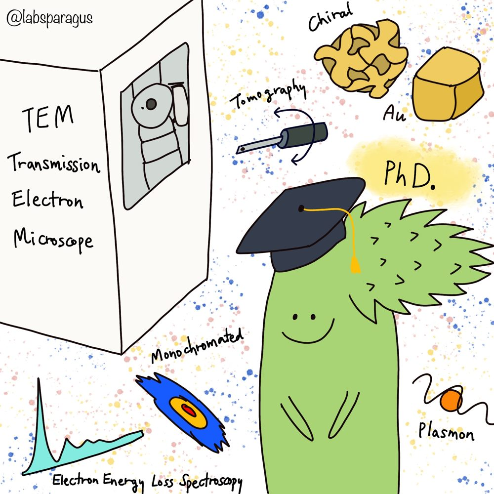
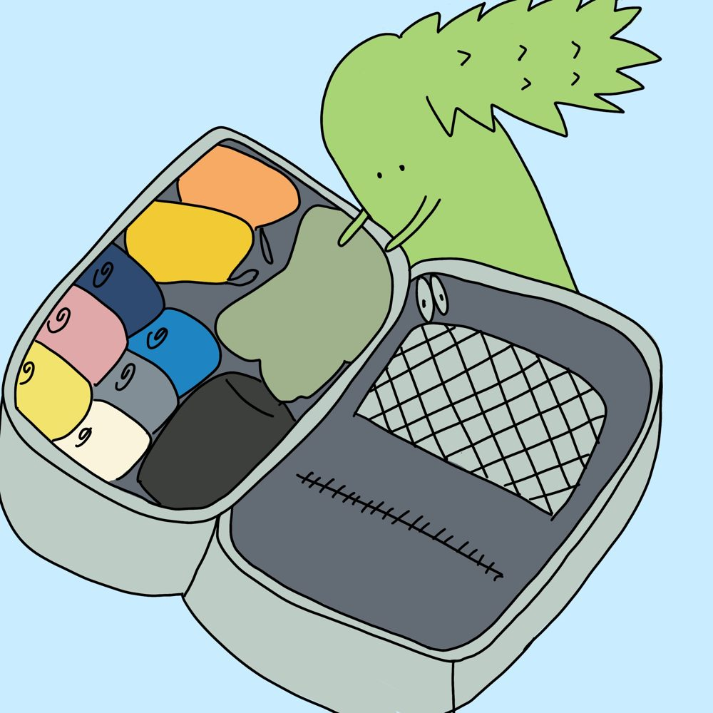

Postdoctoral Research Associate, University of Illinois Chicago. Ph.D. Materials Science & Engineering, Seoul National University.
I use monochromated STEM-EELS and electron tomography to image plasmonic near-fields in three dimensions — watching how chirality and geometry shape the way nanoparticles trap light.


I'm a Postdoctoral Research Associate at the University of Illinois Chicago, working on monochromated low-loss electron energy loss spectroscopy (EELS) to map the optical properties of materials at the nanoscale. Most of my time is spent on a monochromated STEM, chasing the plasmonic near-fields that live in and around nanoparticles.
I completed my Ph.D. in Materials Science & Engineering at Seoul National University under Prof. Miyoung Kim, where my thesis used low-loss EELS in a TEM to reconstruct nanoscale near-fields in a chiral plasmonic nanoparticle in three dimensions. I spent a winter as a visiting researcher at the Ernst Ruska-Centre in Jülich, Germany, working on orbital-angular-momentum-resolving EELS.
Lately I'm interested in pushing electron tomography beyond structure — toward volumetric maps of optical, electronic, and vibrational properties — and in using ultrafast and chiral-sensitive electron spectroscopies to study collective excitations in quantum materials.
Awarded a Gordon & Betty Moore Foundation Postdoctoral Fellowship (expected).
Visited the Electron Microscopy & Materials Science Laboratory at the University of Tokyo.
Presented 3D imaging of circular dichroic plasmonic near-fields using polarization-controlled PINEM at the Asia-Pacific Microscopy Congress, Brisbane.
Started as a Postdoctoral Research Associate at the University of Illinois Chicago.
Finished my Ph.D. in Materials Science & Engineering at Seoul National University, advised by Prof. Miyoung Kim.
Mapping the optical, electronic, and vibrational properties of materials at the nanoscale using monochromated STEM-EELS, with a focus on plasmonic near-fields in nanoparticles.
Reconstructing materials' properties in 3D from EELS, diffraction, and cathodoluminescence tilt-series — most recently, the chiroptical near-fields of a chiral nanoparticle.
Using chiral-sensitive and ultrafast electron spectroscopies (PINEM, UEM) to probe phonon and magnon dispersions and the origins of high-temperature superconductivity.
Full academic history, awards, and a complete publication & presentation list are available in my CV.
Download CV (PDF) →